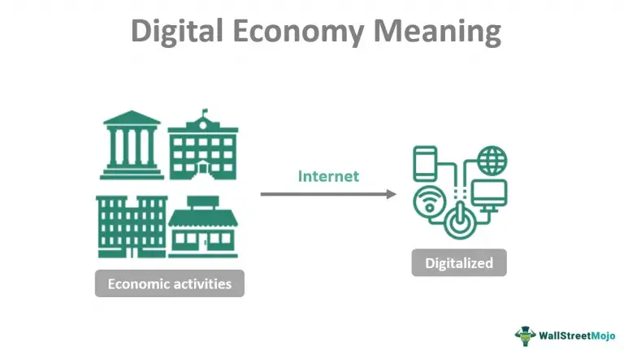

DBM
Explain Different types of cryptographic algorithms with a suitable example.
(10, 2023 May) Explain SSL and PKI? (10, 2023 May) Explain digital signature (5, 2024 May)
Cryptographic algorithms are mathematical functions used to encrypt (scramble) plaintext into ciphertext and decrypt ciphertext back into plaintext.
- Digital Signatures:

- Mathematical schemes that demonstrate the authenticity and integrity of a digital message or document.
- Example: Alice uses her private key to create a digital signature for a document. Bob receives the document and verifies the signature using Alice's public key, confirming that Alice sent the document and that it hasn't been altered.
- Digital Certificates:

- Electronic documents that associate a public key with an identity (e.g., a person, organization, server). They are issued by a trusted third party called a Certificate Authority (CA).
- Example: A website obtains an SSL certificate from a CA. This certificate contains the website's public key and identity information, allowing users' browsers to verify the website's authenticity and establish a secure connection.
- Public Key Infrastructure (PKI) for Security:

- A system for creating, managing, distributing, using, storing, and revoking digital certificates. It provides a framework for secure communication and authentication.
- Example: A company uses a PKI to issue digital certificates to its employees for secure email communication and access to internal resources. The PKI includes CAs, registration authorities, and certificate repositories.
- SSL:

- SSL (Secure Sockets Layer)/TLS (Transport Layer Security): A cryptographic protocol that provides secure communication over a network, often used for web browsing (HTTPS).
What do you mean by digital business infrastructure? Name the different hardware and software that are used in the e-infrastructure.
(10, 2024 May) (10, 2023 May)
Digital business infrastructure refers to the fundamental hardware and software technologies that enable a business to operate in the digital environment. It's the backbone that supports online interactions, data management, communication, and various digital processes.
Hardware used in e-infrastructure:
- Servers: Powerful computers that store and manage data, run applications, and host websites.
- Networking Equipment: Routers, switches, firewalls, and cables that facilitate data transmission and connectivity.
- Client Devices: Computers, laptops, tablets, and smartphones used by employees and customers to access digital services.
- Data Storage Devices: Hard drives, solid-state drives (SSDs), and network-attached storage (NAS) for storing digital information.
Software used in e-infrastructure:
- E-commerce Platforms: Software that enables online selling and buying (e.g., Shopify, Magento).
- Database Management Systems (DBMS): Software for organizing, storing, and managing data (e.g., MySQL, PostgreSQL).
- Enterprise Resource Planning (ERP) Systems: Integrated software for managing core business processes.
- Customer Relationship Management (CRM) Systems: Software for managing interactions with customers.
Explain legal societal and ethics impact of E commerce.
(10, 2024 May) (10, 2023 May)
Legal Impact:
- Data Privacy and Security: E-commerce businesses must comply with data protection laws (e.g., GDPR, CCPA, Digital Personal Data Protection Act in India) regarding the collection, storage, and use of customer data.
- Consumer Protection: Laws protect online consumers from unfair trade practices, misleading advertisements, and defective products, requiring clear disclosure of product details, return policies, and grievance redressal mechanisms.
- Intellectual Property Rights: E-commerce platforms must address issues like trademark infringement, copyright violations, and the sale of counterfeit goods.
Societal Impact:
- Increased Accessibility and Convenience: E-commerce provides 24/7 access to a wide range of goods and services for consumers globally.
- Price Competition and Affordability: Online marketplaces often lead to greater price competition, making products more affordable.
- Empowerment of Small Businesses and Entrepreneurship: E-commerce lowers entry barriers for new businesses, allowing them to reach a wider customer base.
- Job Creation and Transformation: While some traditional retail jobs may be affected, new jobs are created in logistics, warehousing, and digital marketing.
Ethical Impact:
- Online Privacy: Ethical considerations involve transparency about data collection practices and obtaining informed consent from users.
- Data Security: Businesses have an ethical responsibility to protect customer data from breaches and unauthorized access.
- Fair Pricing and Transparency: Avoiding predatory pricing, hidden fees, and misleading discounts is crucial for ethical e-commerce.
Explain how B2B-E-Commerce-selling and buying in private e-markets.
(10, 2024 May) Explain selling and buying in private e-markets with respect to business-to-business E-Commerce. (10, 2023 May)
Private e-markets in B2B e-commerce are online platforms owned and operated by a single company for its exclusive use. They facilitate selling to selected customers (sell-side) or buying from approved suppliers (buy-side).
Selling in Private E-markets (Sell-Side):
- Control: The selling company has complete control over the platform, including product listings, pricing, and branding.
- Customer Relationships: Enables stronger relationships with key customers through tailored offerings and direct communication.
- Efficiency: Streamlines the sales process, order management, and potentially reduces sales costs.
- Customization: Allows for customized catalogs and pricing based on individual customer needs.
Buying in Private E-markets (Buy-Side):
- Control: The buying company controls the platform and the pool of invited suppliers.
- Cost Reduction: Can lead to better pricing through negotiated contracts and competitive bidding among approved suppliers.
- Compliance: Ensures adherence to internal procurement policies and preferred supplier agreements.
- Visibility: Offers better visibility into spending and purchasing activities across the organization.
What is business plan? Why it is required in any business organization?
(10, 2024 May) (10, 2023 May)
An E-business strategic plan is a comprehensive roadmap that outlines how an organization will leverage digital technologies, online platforms, and internet-driven processes to achieve its business objectives.
A business plan is required in any business organization for several key reasons:
- Provides Direction: It acts as a guide for the business, outlining objectives and how to reach them.
- Secures Funding: It is often essential for attracting investors and securing loans.
- Identifies Potential Problems: The planning process helps anticipate challenges and develop solutions.
- Attracts Talent: A well-articulated plan can attract skilled employees who believe in the company's vision.
- Measures Success: It provides benchmarks to track progress and evaluate performance.
Explain Opportunities and Challenges in Digital Business.
(10, 2023 May) (5, 2024 May)
Opportunities

- Digital Disruption from Within:
- Established companies can disrupt themselves by embracing digital transformation.
- For example, Steve Jobs disrupted Apple's own successful iPod by introducing the iPhone. Companies need to innovate internally to stay ahead of digital-native competitors.
- Showrooming and Webrooming:
- Showrooming: Consumers browse products in physical stores but buy them online.
- Webrooming: Consumers research products online but purchase them in-store.
- Digital Workforces and New Ways of Working:
- Startups and even established companies can leverage small, agile teams that work on a project basis.
- This approach allows employees to work on projects they are passionate about, leading to higher engagement and better outcomes.
- The Internet of Things (IoT):
- IoT connects devices, enabling data-driven decision-making, automation, and new revenue streams.
Challenges
- Rising Customer Expectations:
- Customers demand faster, more personalized, and seamless digital experiences.
- Talent Shortage:
- The rapid pace of digital transformation has created a skills gap, with businesses struggling to find and retain talent with expertise in areas like data science, AI, cybersecurity, and digital marketing.
- Omni-Channel Complexity:
- Delivering a consistent and integrated experience across multiple channels (e.g., online, mobile, in-store) is complex and resource-intensive.
- Big Data and Privacy:
- While big data offers valuable insights, managing and protecting it poses significant challenges, especially with increasing regulatory scrutiny and consumer concerns about privacy.
Explain ERP and its components.
(10, 2023 May)
graph TD
B(ERP);
B --> D{Finance};
B --> E{Human Resources};
B --> F{Manufacturing};
B --> G{Supply Chain};
B --> H{Sales};
B --> I{Procurement};
In ERP (Enterprise Resource Planning) is a type of software that organizations use to manage day-to-day business activities such as:
Globalization and IT advancements are transforming Indian business, driving ERP system implementation for enhanced efficiency, quality, productivity, and profitability.
Key Components:
- Finance: Manages accounting, budgeting, and financial reporting.
- Human Resources: Oversees employee data, payroll, and recruitment.
- Manufacturing: Handles production planning and scheduling.
- Supply Chain Management: Manages inventory, procurement, and logistics.
- Customer Relationship Management: Tracks customer interactions and sales.
Explain key business processes that the ERP system will support?
(10, 2024 May)

- Inventory Management: An ERP helps optimize inventory levels, reduce storage costs, and ensure timely availability of stock.
- Supply Chain Management: An ERP provides visibility and control over the supply chain, improving efficiency and responsiveness.
- Finance: This area covers all financial transactions and reporting, including accounting, budgeting, accounts payable and receivable, and financial analysis.
- Human Resources: An ERP streamlines HR processes and helps manage the workforce effectively.
- Time & Projects: This focuses on tracking employee time, managing project resources, scheduling tasks, and monitoring project progress and costs.
- CRM & Sales (Customer Relationship Management & Sales): An ERP helps build stronger customer relationships and drive sales growth.
Explain in detail what are the most prevalent security threats to e-businesses today?
(10, 2024 May)

E-commerce involves online buying and selling. Threats arise from using the internet for theft, fraud, and security breaches. These threats can be accidental, intentional, or due to human error.
- Electronic Payment System Risks: Electronic payment systems are crucial for e-commerce, enabling paperless transactions and reducing costs. However, they pose several risks:
- Fraud: Authentication methods like passwords and security questions can be compromised, allowing unauthorized access to funds.
- Tax Evasion: The digital nature of electronic payments can complicate tax compliance verification for revenue services.
- Payment Conflicts: Automated systems handling frequent, large-volume transactions with multiple recipients are prone to errors and technical glitches.
- E-cash Threats: E-cash is an anonymous paperless fund transfer system. While convenient, storing financial information digitally makes it vulnerable to hackers. Major threats include:
- Backdoor Attacks: Attackers gain unauthorized system access, bypassing normal authentication and remaining hidden.
- Denial of Service (DoS) Attacks: Attackers disrupt access for legitimate users by overwhelming network resources.
- Eavesdropping: Unauthorized interception of private online communications occurs without detection.
- Credit/Debit Card Fraud: Credit cards allow borrowing for purchases, while debit cards use deposited funds. Associated threats include:
- ATM Skimming: Devices attached to card readers steal card details (number, name, CVV, expiry).
- Vishing/Phishing: Attackers deceive users via phone calls (vishing) or SMS (smishing) posing as legitimate entities to obtain sensitive information like PINs and account details.
Explain how does the e-business strategy align with the overall business vision and mission?
(10, 2024 May)
The e-business strategy serves as the digital roadmap for an organization, outlining how technology will be used to achieve its overarching goals.
Its alignment with the overall business vision and mission is crucial for a cohesive and effective organizational strategy.
- Vision Alignment: The e-business strategy identifies how digital initiatives can contribute to the long-term aspirations and desired future state articulated in the business vision.
- Mission Support: The e-business strategy details the specific digital tactics and operational changes required to fulfill the organization's core purpose and values stated in the mission.
- Resource Allocation: The e-business strategy guides the allocation of technological and financial resources in a way that supports the overall strategic priorities of the business.
- Goal Congruence: The objectives of the e-business strategy should directly support the broader business goals.
- Maintaining brand consistency: All online activities, from marketing to customer service, should project a consistent brand image that aligns with the overall business identity.
Describe how Amazon used data analytics to enhance its business:
(10, 2024 May)
Amazon.com, Inc., doing business as Amazon, is a multinational technology company based in Seattle, Washington. Founded by Jeff Bezos on July 5, 1994, initially as an online bookstore, Amazon has grown into a vast global enterprise involved.
Amazon utilizes data analytics to enhance its business in several key ways:
- Personalized Recommendations: Analyzing browsing history, purchase patterns, and ratings to suggest relevant products to individual customers, increasing sales and customer satisfaction.
- Demand Forecasting: Predicting future demand by analyzing historical sales data, seasonal trends, and other factors to optimize inventory levels, reduce stockouts, and minimize holding costs.
- Supply Chain Optimization: Using data to improve logistics, delivery routes, and warehouse management, leading to faster delivery times and reduced operational costs.
- Dynamic Pricing: Adjusting prices in real-time based on factors like demand, competitor pricing, and inventory levels to maximize revenue and maintain price competitiveness.
- Customer Behavior Analysis: Gaining insights into how customers interact with the platform, what they search for, and their purchasing habits to improve website design, marketing efforts, and overall customer experience.
Explain what is the key action steps required to implement our e-business strategy?
(10, 2024 May)
The e-business strategic formulation process involves a structured approach to align a company's online activities with its overall business goals. Here are the key steps:
Traditional Model Alignment:
- Analyze External and Internal Environments: Identify the company's strengths, weaknesses, opportunities, and threats in the e-business context, mirroring traditional strategic planning.
- Select an E-business Strategy: Leverage knowledge of how e-business creates economic value. Define the scope of online activities, target products, clients, and geographic markets, and set clear, measurable goals.
- Implement the E-business Strategy: Plan the execution of the chosen strategy, deciding on technological solutions and supply chain adoption for new or existing products and target markets.
- Evaluate E-business Success: Finalize objectives for sales growth, cost reduction, and profitability. Select key indicators (financial, client, internal process, learning, and growth) to assess the e-business solution's success using scorecards.
IT/E-Business Strategy Formulation:
To maintain competitiveness, particularly in international markets or with large clients, SMEs need to continuously improve their IT/e-business capabilities through a structured strategy formulation process.
- Review Your Business Strategy: Ensure your IT and e-business initiatives directly support your overarching business strategy.
- Identify Business Problems for IT Solutions: Pinpoint business issues (e.g., stockouts, long lead times, reporting inefficiencies) that improved IT usage could address. Also, consider potential competitive advantages from novel IT applications.
- Identify Possible Projects: Brainstorm potential IT projects to tackle the identified problems and opportunities. This might involve new technology, process changes, or staff training.
- Prioritize: Make strategic choices, considering both the importance and the necessary order of projects due to technical or practical constraints.
Explain Drivers of digital business- Big Data Analytics, Mobile, Cloud Computing, Social media
(10, 2023 May)
- Big Data Analytics:
- Enables businesses to extract valuable insights from vast amounts of data.
- Supports informed decision-making, improved customer understanding, and personalized offerings.
- Facilitates predictive analysis for forecasting trends and optimizing operations.
- Mobile:
- Provides ubiquitous connectivity and access to digital services.
- Drives new channels for customer interaction, sales, and service delivery.
- Supports mobile-first strategies for enhanced user experience and engagement.
- Cloud Computing:
- Offers scalable and flexible IT infrastructure and services.
- Reduces capital expenditure on hardware and software.
- Enables agility, faster deployment of applications, and remote accessibility.
- Social Media:
- Creates platforms for direct engagement with customers and stakeholders.
- Facilitates marketing, brand building, and customer support.
- Provides real-time feedback and insights into customer sentiment and market trends.
Describe the use of firewalls and their types.
(10, 2023 May)

A firewall is a network security system that acts as a barrier between a trusted internal network and an untrusted external network, such as the internet. Functioning like a gatekeeper, it monitors incoming and outgoing network traffic based on a predefined set of security rules.
Types of Firewalls:
- Packet Filtering Firewall: Examines individual packets based on source/destination IP addresses, ports, and protocols.
- Stateful Inspection Firewall: Monitors the state of active connections and allows traffic based on the context of these connections.
- Proxy Firewall (Application-Level Gateway): Acts as an intermediary between networks, inspecting traffic at the application layer.
- Next-Generation Firewall (NGFW): Combines traditional firewall features with advanced capabilities like deep packet inspection, intrusion prevention, and application awareness.
- Hardware Firewall: A physical appliance deployed at the network perimeter.
- Software Firewall: Runs as software on a host device.
Explain the use of mobile computing as a digital driver of the digital economy.
(5, 2024 May)

Mobile Computing refers to the ability to use computing devices without a fixed physical connection. Involves mobile communication, mobile hardware, and mobile software. Enables users to access information and perform computing tasks from virtually any location.
- Enhanced Connectivity and Access: Mobile devices and networks provide widespread internet access, connecting individuals and businesses to the digital economy regardless of location.
- Increased Productivity and Efficiency: Mobile computing enables remote work, on-the-go collaboration, and access to information and tools, boosting individual and organizational productivity.
- Facilitation of E-commerce and M-commerce: Mobile devices are central to online shopping, digital payments, and mobile-based transactions, driving economic activity and creating new business models.
- Empowerment of Digital Services: Mobile platforms enable the delivery of a wide range of digital services, including banking, healthcare, education, and entertainment, reaching broader populations.
What is the primary goal of the digital application or digital infrastructure?
(5, 2024 May)
The primary goal of any digital application or digital infrastructure is to solve a problem or fulfill a need effectively and efficiently using digital technologies.
- Improving efficiency and productivity: Automating tasks, streamlining workflows, and providing quicker access to information.
- Enhancing user experience: Creating intuitive, accessible, and engaging interfaces and interactions.
- Providing access to information and services: Making resources and functionalities available to a wider audience, regardless of location or time.
- Improving decision-making: Providing data-driven insights and analytical capabilities.
- Increasing security and reliability: Protecting data and ensuring consistent and dependable operation.
What are the pillars of e-commerce network?
(5, 2024 May)

The pillars of an e-commerce network are the fundamental components and capabilities that work together to create a successful online business. While different sources might categorize them slightly differently, here's a comprehensive view of the key pillars:
- Domain: This refers to your online presence, including your website, brand name, and overall online identity.
- Marketing: This pillar encompasses all the strategies and tactics you use to attract customers to your online store and promote your products or services.
- Payment: This involves the secure and efficient processing of transactions, offering customers various payment options.
- Logistics: This crucial pillar deals with the storage, packaging, and delivery of products to customers.
Explain Internet of Things - driver for digital business
(5, 2023 May)
The Internet of Things (IoT) is a network of physical objects embedded with sensors, software, and other technologies that enable them to collect and exchange data. It acts as a significant driver for digital business by:
- Enabling Data-Driven Insights: IoT devices generate vast amounts of real-time data, which, when analyzed, provides valuable insights into operations, customer behavior, and market trends, leading to better decision-making.
- Enhancing Customer Experience: IoT enables personalized services, proactive support, and the development of innovative products and services tailored to customer needs.
- Creating New Business Models: The connectivity and data exchange facilitated by IoT open up opportunities for novel business models, such as subscription-based services, pay-per-use models, and data monetization.
- Driving Innovation: IoT technologies, combined with AI and analytics, foster innovation by enabling the creation of smart products, intelligent systems, and interconnected ecosystems.
Explain different factors that affect consumer behavior
(5, 2023 May)
Affecting consumer behavior refers to the various factors that influence how individuals make decisions when purchasing goods or services to satisfy their needs and wants.
- Cultural Factors: These encompass the broad values, beliefs, customs, and traditions shared by a society. Subcultures (e.g., religion, ethnicity, geographic region) and social class also play a significant role.
- Social Factors: These involve the influence of other people and groups. Key social factors include:
- Reference Groups: Groups that individuals identify with and whose opinions they value (e.g., family, friends, colleagues).
- Family: Family members can strongly influence purchasing decisions.
- Psychological Factors: These are internal factors specific to an individual that influence their buying decisions. These include:
- Motivation: The driving force behind a consumer's actions.
- Learning: Changes in behavior resulting from experience.
- Personality: Individual characteristics that influence responses to marketing stimuli.
- Personal Factors: These are characteristics unique to an individual, such as:
- Occupation: A person's job can influence what they buy.
- Economic Situation: Income, savings, and borrowing power affect purchasing ability.
- Lifestyle: An individual's pattern of living as expressed in their activities, interests, and opinions.
Describe the need for security in e-commerce
(5, 2023 May)
Security in e-commerce refers to the measures and protocols implemented to protect online transactions, customer data, and the overall integrity of an e-commerce platform.
- Protection of Customer Data: E-commerce platforms handle sensitive information like names, addresses, and payment details, requiring robust security to prevent data breaches and identity theft.
- Maintaining Customer Trust: Security breaches can severely damage a business's reputation and erode customer trust, leading to a loss of business.
- Avoiding Financial Loss: Cyberattacks can result in direct financial losses through fraud, legal penalties, and the costs associated with recovering from security incidents.
- Ensuring Business Continuity: Security measures protect against disruptions like DDoS attacks, ensuring the website remains accessible and operational.
- Legal and Regulatory Compliance: Various regulations mandate the protection of customer data, and implementing security measures helps businesses comply with these requirements.
Explain different types of e-business (5, 2023 May)

E-commerce, short for electronic commerce, refers to the buying and selling of goods and services over the internet. It involves the exchange of data or currency to process a transaction between a buyer and a seller.
E-commerce operates in different forms, and here are the different types of e-commerce:
- Business-to-Consumer (B2C):
- This type of e-commerce involves companies selling their products or services directly to the end-user, the consumer who needs it.
- This is the most common type of e-commerce, and it includes online retailers such as Amazon, Walmart, and Target.
- Business-to-Business (B2B):
- This type of e-commerce involves businesses selling their products or services to other businesses. The buyer often resells the products to the consumer. B2B e-commerce includes companies such as Alibaba, which connects businesses with suppliers.
- Consumer-to-Consumer (C2C):
- This type of e-commerce involves consumers selling products or services to other consumers.
- This type of e-commerce is facilitated by online marketplaces such as eBay, Etsy, and Craigslist.
- Consumer-to-Business (C2B):
- This type of e-commerce involves consumers selling their products or services to businesses.
- This type of e-commerce is common in the freelance industry, where individuals offer their services to businesses that need them.
- Business-to-Government (B2G):
- This type of e-commerce involves businesses selling their products or services to government agencies.
- This type of e-commerce is common in the defense industry, where businesses sell their products to the government.
- Consumer-to-Government (C2G):
- This type of e-commerce involves consumers selling their products or services to government agencies.
- This type of e-commerce is common in the freelance industry, where individuals offer their services to government agencies that need them.
Explain building blocks of mobile commerce. (5, 2023 May)

Mobile commerce, also known as m-commerce, refers to the buying and selling of goods and services through wireless handheld devices such as smartphones and tablets.
- Mobile Devices: Smartphones and tablets with internet connectivity are the primary interface for mobile commerce.
- Mobile Networks: Reliable and secure wireless networks (e.g., 4G, 5G, Wi-Fi) are essential for seamless transactions.
- Mobile Commerce Platforms: Software applications and websites optimized for mobile devices enable browsing, purchasing, and payments.
- Payment Gateways: Secure systems for processing mobile payments, including digital wallets, credit/debit cards, and mobile billing.
- Security Protocols: Measures like encryption and authentication to protect sensitive data and ensure secure transactions.
UT Questions
What are different needs to be considered for the analysis of Company's internal and external environment?
To succeed, businesses must understand factors impacting their development. Identifying internal strengths and weaknesses, and external opportunities and threats, allows for effective strategic planning. Analyzing these factors is crucial before launching any strategic marketing plan.
Internal Environment Factors
Internal factors are controllable elements within the company, categorized as strengths (positive impact) or weaknesses (hindering development).
Key internal factors include:
- Plans & Policies
- Value Proposition
- Human Resources
- Financial and Marketing Resources
- Corporate Image and Brand Equity
External Environmental Factors
External factors are uncontrollable elements outside the company. Understanding the external environment enables businesses to adapt their marketing plans. Key external factors include the current economic situation, laws, surrounding infrastructure, and customer demands.
Micro Factors:
- Customers
- Suppliers
- Competitors
- Public
- Marketing & Media
Macro Factors:
- Economic
- Political/Legal
- Technology
- Social
- Natural
What are the different skills required to manage E-Business? (02 Marks)
E-commerce platforms require both marketing/sales and IT expertise. Here are key technical skills:
- UX Design: Focusing on front-end design and engineering to create user-friendly and intuitive e-commerce software.
- Search Engine Optimization (SEO): Optimizing online platforms with strategic keywords to rank higher in search engine results and social media, increasing visibility.
- Digital Marketing: Utilizing online strategies like email campaigns, mobile marketing, social media, and search engine advertising.
- Data Analytics: Analyzing cleaned data to identify trends and insights for improving product/service interest, requiring technical skills (data procurement, visualization, machine learning/AI) and soft skills (business understanding, organization, conceptualization).
- Artificial Intelligence (AI): Implementing AI for purchase recommendations, virtual assistants, anti-counterfeiting, automated analytics, and customer profiling. Requires skills in programming, data collection/curation, data analysis, and software modeling.
Define Digital economy.

The digital economy refers to an economy that is based on digital technologies, particularly the internet, and the various activities, transactions, and interactions that occur within it.
At its core, the digital economy includes online commerce (e.g., e-commerce platforms like Amazon or Alibaba), digital services (e.g., streaming platforms like Netflix, cloud computing, or software-as-a-service), and the infrastructure that supports them (e.g., telecommunications, data centers, and internet connectivity.
Advantages
- Greater Information Access: Consumers gain more choice and information through the internet, easily comparing prices and accessing details instantly, such as for travel or shopping.
- Time Savings: Online ordering and delivery (e.g., office supplies arriving next day) reduce the need for physical trips, cutting labor costs and boosting efficiency.
- Reduced Costs: Businesses save on physical infrastructure by operating online, bypassing retail middlemen and offering lower prices direct from warehouses.
- Personalization: Digital platforms enable tailored products (e.g., custom clothes via 3D printing), meeting individual preferences beyond what traditional stores can stock.
Disadvantages
- Monopoly Power: Giants like Amazon, Google, and Facebook dominate markets, using their influence to charge high rates or undercut competitors, reducing fair competition.
- Less Community: Online shopping replaces local hubs like bookstores, diminishing physical interactions and community experiences tied to traditional commerce.
- Addictive Technology: Excessive time on social media or browsing can outweigh time-saving benefits, overwhelming users with information and hindering decision-making.
- Privacy Issues: Data harvesting by companies like Facebook raises concerns, as personal information is exploited for targeted ads, often without full user consent.
Explain five value delivery methods for E-commerce.
- Direct-to-Customer (D2C):
- Brands sell directly to consumers online, bypassing middlemen, fostering loyalty and rapid growth.
- Example: New-generation consumer brands cutting out intermediaries.
- White Label and Private Label:
- White labeling applies a brand to a distributor’s product, while private labeling creates exclusive products via manufacturers.
- Example: Retailers branding generic goods.
- Wholesaling:
- Retailers offer bulk products at discounted rates, traditionally B2B but now also B2C for budget-conscious buyers.
- Example: Online stores providing wholesale deals to consumers.
- Drop Shipping:
- Retailers sell products fulfilled by third-party suppliers, acting as middlemen without holding inventory. Easy-to-use tools integrate global supplier inventories.
- Example: Drop shippers on platforms like Shopify.
- Subscription Service:
- Businesses offer recurring deliveries of goods/services (e.g., groceries, media) for convenience and savings.
- Example: Monthly book or grocery subscriptions adapted to modern industries.
Define Marketplace.

A marketplace, in the context of e-commerce, is an online platform that connects buyers and sellers, facilitating the exchange of goods, services, or information.
It serves as a digital environment where multiple vendors or individuals can list their offerings, and customers can browse, compare, and purchase them, typically all within a single platform.
Explain Marketing Research.
Market research is the systematic process of gathering, analyzing, and interpreting information to help businesses or individuals assess the viability of a product or service and make informed decisions.
Purpose and Importance
- Understanding Consumer Behavior: It builds a picture of how consumers think, choose, and interact with products or services.
- Evaluating Market Fit: It determines how well a product or service meets market demands.
- Sizing the Market: It estimates the potential market size for a specific offering.
- Strategic Planning: It aids in business planning, marketing strategy development, and identifying growth opportunities.
- Competitive Analysis: It helps identify major competitors and establish a unique value proposition (UVP) to stand out.
- Problem-Solving: It addresses marketing challenges and uncovers actionable insights.
Explain Types of Marketing Research.
Marketing research encompasses various methods to gather insights about markets, customers, and competitors. These methods can be used individually for specific purposes or combined for a comprehensive understanding.
- Competitor Analysis
- What it is: A method to study competitors offering similar products or services, or those with potential to do so.
- Example: Comparing your product’s price and quality to a rival’s to adjust your offerings or marketing.
- Benefit: Helps anticipate competitors’ moves and build a competitive edge.
- What it is: A method to study competitors offering similar products or services, or those with potential to do so.
- Interviews
- What it is: A qualitative, one-on-one method between an interviewer and participant.
- How it works: Conducted via phone, online, or face-to-face; can be open-ended or structured with specific questions.
- Purpose: Gathers in-depth insights into customer needs, opinions, or feedback, ideal for exploratory research like new product development or market evaluation.
- Example: Interviewing customers post-launch to assess satisfaction.
- What it is: A qualitative, one-on-one method between an interviewer and participant.
- Focus Groups
- What it is: A moderated group discussion where participants interact and share ideas on a topic.
- Purpose: Generates collective insights and brainstorming, useful for testing concepts or understanding group dynamics.
- Example: A focus group discussing reactions to a new ad campaign.
- What it is: A moderated group discussion where participants interact and share ideas on a topic.
- Surveys
- What it is: A scalable, often quantitative method to collect data from a targeted audience.
- Purpose: Measures brand awareness, customer preferences, market trends, or competitive standing; supports segmentation and campaign planning.
- Example: An online survey gauging interest in a new product feature.
- What it is: A scalable, often quantitative method to collect data from a targeted audience.
How to Conduct Market Research.
- Define Objectives
- What to do: Clearly outline what you want to learn (e.g., customer preferences, market size, competitor strengths).
- Example: “Understand why customers prefer competitor X’s product.”
- Collect Data
- Primary Data: Gather your own data through:
- Surveys: Online or phone questionnaires.
- Interviews: One-on-one discussions (phone, online, or in-person).
- Focus Groups: Moderated group sessions.
- Secondary Data: Use existing sources like:
- Online reports, government sites (e.g., Census.gov), or industry studies.
- Primary Data: Gather your own data through:
- Analyze Data
- What to do: Organize and interpret findings using tools or techniques.
- Example: Identify that 70% of respondents value price over quality, per survey results.
- Apply Insights
- What to do: Use findings to make decisions—adjust products, target new segments, or refine marketing strategies.
- Example: Lower prices based on survey feedback to attract budget-conscious customers.
- Monitor and Refine
- What to do: Track results (e.g., sales, web traffic) post-implementation and adjust if needed.
- Example: If sales don’t rise after price cuts, survey again to tweak the approach.
Explain E-Learning.
E-Learning, short for "electronic learning," refers to the use of digital technologies, primarily the internet, to deliver educational content and facilitate learning outside of traditional classroom settings.
Key Features of E-Learning:
- Digital Delivery: Content is delivered via electronic devices such as computers, tablets, or smartphones, typically through online platforms, apps, or software.
- Variety of Formats: E-Learning can include text-based lessons, videos, interactive quizzes, webinars, podcasts, virtual simulations, and more.
- Accessibility: Learners can access materials anytime, anywhere, as long as they have an internet connection, making it highly convenient compared to physical classrooms.
- Interactivity: Many e-learning systems incorporate tools like discussion forums, live chats, or gamified elements to engage learners.
- Scalability: It allows institutions or instructors to reach a global audience without the limitations of physical space.
E-Learning platforms
- Coursera
- Udemy
- NPTEL
- EdX
Digital Five Forces in details.
The Digital Five Forces framework is an adaptation of Michael Porter's traditional Five Forces model, tailored to analyze the competitive dynamics in the digital economy.
This framework helps businesses understand the impact of digital technologies on their industry and how to navigate the challenges and opportunities they present.
- Digital Substitutes
- Definition: Digital substitutes refer to alternative products or services that are enabled by digital technologies and can replace traditional offerings
- Example: Streaming services like Netflix have become digital substitutes for traditional cable TV.
- Digital New Entrants
- Definition: Digital new entrants are new companies or startups that leverage digital technologies to enter a market, often with lower barriers to entry compared to traditional businesses.
- Example: Airbnb entering the hospitality industry without owning any physical properties.
- Digital Rivalry
- Definition: Digital rivalry refers to the intensity of competition among existing players in a market, amplified by digital tools and platforms.
- Example: E-commerce platforms like Amazon and Walmart competing fiercely in online retail, leveraging data analytics and AI to enhance customer experience.
- Digital Supplier Power
- Definition: Digital supplier power refers to the influence that suppliers of digital technologies, platforms, or services have over businesses.
- Example: Businesses relying on AWS (Amazon Web Services) for cloud infrastructure may face challenges if AWS changes its pricing or service terms.
- Digital Buyer Power
- Definition: Digital buyer power refers to the increased influence that customers have due to the availability of information, comparison tools, and digital platforms.
- Example: Online shoppers using price comparison websites to find the best deals, putting pressure on retailers to offer competitive pricing.
Explain E-Government.

E-Government (short for Electronic Government) refers to the use of digital technologies, particularly the internet, to deliver government services, information, and interactions to citizens, businesses, and other government entities.
Categories Of E-Government
- Government-to-Citizen (G2C)
- Government-to-Business (G2B)
- Government-to-Government (G2G)
- Government-to-Employee (G2E)